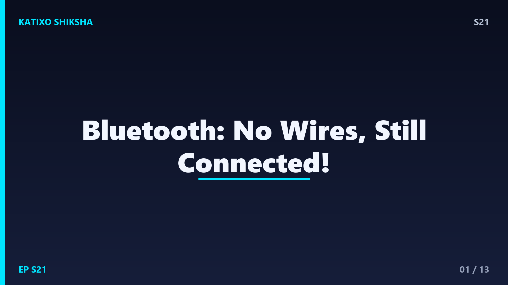
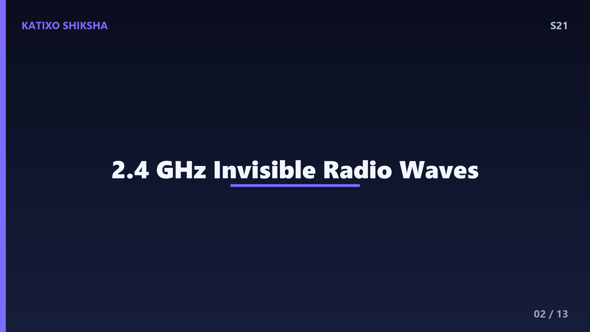
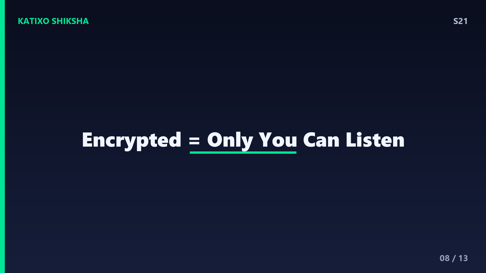
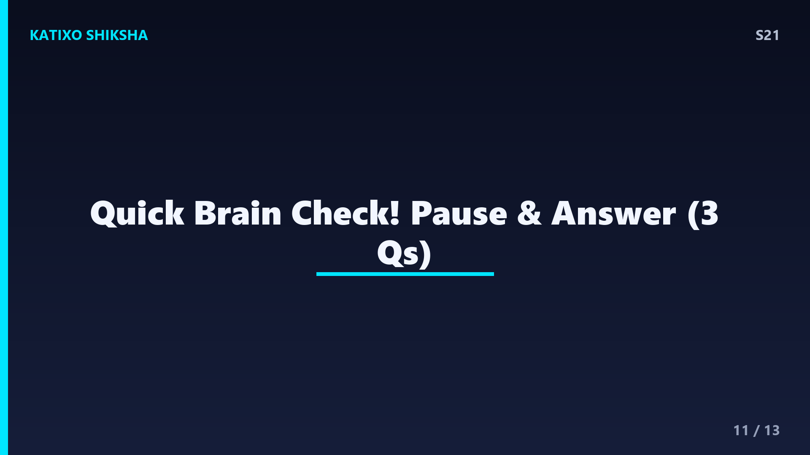

S21 — Bluetooth बिना तार के कैसे जुड़ता है?

Slide 1दोस्तों, तुमने कभी सोचा है कि तुम्हारे earbuds बिना किसी wire के phone से music कैसे खींच लेते हैं? ना कोई cable, ना कोई plug, फिर भी आवाज़ सीधे कानों में! ये जादू नहीं, science है जिसका नाम है Bluetooth. आज Katixo KhojLab पर हम समझेंगे कि ये invisible connection आख़िर काम कैसे करता है, इसका नाम एक राजा के नाम पर क्यों पड़ा, और कैसे तुम्हारा phone एक साथ कई devices को पहचानता है. तो तैयार हो जाओ, क्योंकि आज हम हवा में दौड़ती हुई जानकारी की दुनिया में घुसने वाले हैं!

Slide 2सबसे पहले basic बात, दोस्तों. Bluetooth एक तरह की radio wave technology है. जैसे radio station गाने भेजता है, वैसे ही तुम्हारा phone और earbuds एक खास frequency पर invisible radio waves भेजते और पकड़ते हैं. ये frequency है 2.4 GHz, यानी हर second में दो अरब चालीस करोड़ बार ये wave ऊपर-नीचे कांपती है! मज़े की बात, यही वही frequency band है जिस पर WiFi और microwave oven भी काम करते हैं. लेकिन Bluetooth बहुत कम power use करता है, इसलिए इसकी range सिर्फ़ दस मीटर के आसपास होती है, पूरे शहर तक नहीं.
Slide 3अब सवाल, इतनी सारी radio waves हवा में हैं, फिर तुम्हारे earbuds सिर्फ़ तुम्हारे phone की बात क्यों सुनते हैं? इसका जवाब है pairing. जब तुम पहली बार connect करते हो, दोनों devices एक secret code, यानी unique address exchange करते हैं. हर Bluetooth device का एक 48-bit का अलग address होता है, बिल्कुल तुम्हारे घर के address की तरह. इसके बाद वो एक encryption key बनाते हैं ताकि बीच में कोई और चोरी से ना सुन सके. तभी तो दोस्तों, मेट्रो में पचास लोगों के earbuds होते हुए भी सबको अपना ही गाना सुनाई देता है!
Slide 4यहाँ एक super smart trick है जिसे frequency hopping कहते हैं. Bluetooth एक ही frequency पर नहीं टिकता, बल्कि हर second में करीब 1600 बार अलग-अलग channels के बीच छलांग लगाता है! 2.4 GHz band को 79 छोटे channels में बांटा जाता है, और दोनों devices एक ही pattern से एक साथ कूदते रहते हैं. फायदा क्या? अगर एक channel पर WiFi या किसी और का signal आ जाए, तो data सिर्फ़ एक छोटे hop के लिए disturb होता है, और फिर अगले clean channel पर बात जारी रहती है. इसी वजह से connection इतना stable रहता है, दोस्तों.
Slide 5अब एक interesting कहानी, दोस्तों. Bluetooth का नाम एक असली राजा के नाम पर है! दसवीं सदी में Denmark का एक राजा था Harald Bluetooth, जिसने Denmark और Norway को जोड़कर एकजुट किया था. इंजीनियरों ने सोचा, जैसे उस राजा ने अलग-अलग हिस्सों को जोड़ा, वैसे ही ये technology अलग-अलग devices को जोड़ती है. और तो और, Bluetooth का जो symbol है, वो राजा Harald के नाम के दो पुराने Nordic अक्षरों, H और B, को मिलाकर बना है! Science और history का कितना मस्त mix है ना?
Slide 6चलो समझते हैं कि connection बनता कैसे है step by step. पहले एक device master बनता है, मतलब boss, जो connection control करता है. बाकी devices बन जाते हैं slaves, जो उसके instructions follow करते हैं. इस छोटे network को piconet कहते हैं. एक master एक साथ सात active slaves तक से बात कर सकता है. इसीलिए तुम्हारा phone एक ही समय में earbuds, smartwatch और car के speaker से connect रह सकता है! Master हर slave को बारी-बारी time देता है, इतनी तेज़ी से कि तुम्हें लगता है सब एक साथ चल रहा है.
Slide 7अब बात करते हैं power की, क्योंकि यही Bluetooth का सबसे बड़ा secret weapon है. 2010 में आया Bluetooth Low Energy, यानी BLE, जो इतनी कम बिजली खाता है कि एक छोटी सी coin cell battery पर महीनों, कभी-कभी सालों चल सकता है! तभी तो दोस्तों, fitness band, smartwatch, और wireless mouse इतने लंबे समय तक चलते हैं. BLE data को छोटे-छोटे packets में भेजता है और बीच में sleep mode में चला जाता है, ताकि energy बचे. ये smartness ही इसे rocket science नहीं, बल्कि smart science बनाती है!

Slide 8एक बड़ा सवाल, दोस्तों, क्या Bluetooth safe है? काफ़ी हद तक हाँ. जैसा हमने देखा, data encrypt होता है, यानी एक secret code में बदल जाता है जिसे सिर्फ़ pair किए गए devices ही पढ़ सकते हैं. लेकिन फिर भी कुछ नियम हैं. जिस device को तुम नहीं जानते उससे कभी pair मत करो, और जब Bluetooth use ना कर रहे हो तो उसे off रखो. इससे battery भी बचेगी और सुरक्षा भी रहेगी. याद रखो, हर technology की तरह Bluetooth भी तभी सबसे अच्छा है जब उसे समझदारी से use किया जाए.
Slide 9तुम्हें ये जानकर हैरानी होगी कि Bluetooth सिर्फ़ earbuds तक सीमित नहीं है, दोस्तों. आजकल wireless keyboard, game controllers, smart bulbs, car का audio system, यहाँ तक कि कुछ medical devices जैसे hearing aids और blood-sugar monitor भी Bluetooth use करते हैं! Latest version Bluetooth 5 तो खुले मैदान में 240 मीटर तक की range दे सकता है और पहले से कई गुना तेज़ data भेजता है. यानी ये technology लगातार बढ़ रही है, और आने वाले समय में और भी ज़्यादा smart devices को आपस में जोड़ेगी.
Slide 10तो एक quick recap, दोस्तों. Bluetooth invisible radio waves का इस्तेमाल करके devices को जोड़ता है. ये 2.4 GHz frequency पर काम करता है, pairing से एक secret connection बनाता है, और frequency hopping से हर second 1600 बार channel बदलकर signal को साफ़ रखता है. एक master सात slaves तक से बात कर सकता है, और BLE की वजह से बहुत कम battery खाता है. अगली बार जब तुम earbuds लगाओ, तो याद रखना, तुम्हारे कानों में एक हज़ार साल पुराने राजा के नाम वाली smart science बज रही है!

Slide 11अब समय है Quick brain check का, दोस्तों! तीन सवाल हैं, और तुम्हें खुद जवाब सोचना है. पहला, Bluetooth किस frequency band पर काम करता है? दूसरा, वो trick क्या कहलाती है जिसमें Bluetooth हर second 1600 बार अलग-अलग channels के बीच छलांग लगाता है? और तीसरा, Bluetooth का नाम किसके नाम पर रखा गया था? अब video को pause करो, थोड़ा दिमाग़ लगाओ, और तीनों जवाब अपने मन में या किसी दोस्त के साथ बोलकर देखो. तैयार? चलो जवाब मिलाते हैं अगली slide पर!
Slide 12चलो दोस्तों, अब जवाब मिलाते हैं! पहला जवाब, Bluetooth 2.4 GHz frequency band पर काम करता है, वही band जो WiFi भी use करती है. दूसरा जवाब, उस trick का नाम है frequency hopping, जिसमें devices एक साथ हज़ारों बार channels बदलते हैं ताकि signal साफ़ रहे. और तीसरा जवाब, Bluetooth का नाम Denmark के राजा Harald Bluetooth के नाम पर रखा गया था, जिन्होंने अलग-अलग हिस्सों को जोड़ा था. कितने सही हुए? अगर तीनों सही, तो शाबाश, तुम तो असली science detective हो!
Slide 13तो दोस्तों, आज हमने सीखा कि Bluetooth कैसे invisible radio waves, smart pairing, और frequency hopping के ज़रिए बिना किसी तार के devices को जोड़ता है, और कैसे एक हज़ार साल पुराने राजा का नाम तुम्हारे earbuds में छुपा है. अगली बार जब कुछ wireless connect हो, तो तुम्हें पता होगा अंदर क्या चल रहा है! अगले episode में हम जानेंगे एक चटपटा सवाल, spicy food मुँह में आग क्यों लगाता है? बहुत मज़ेदार रहने वाला है. Subscribe करना मत भूलना! Bye!